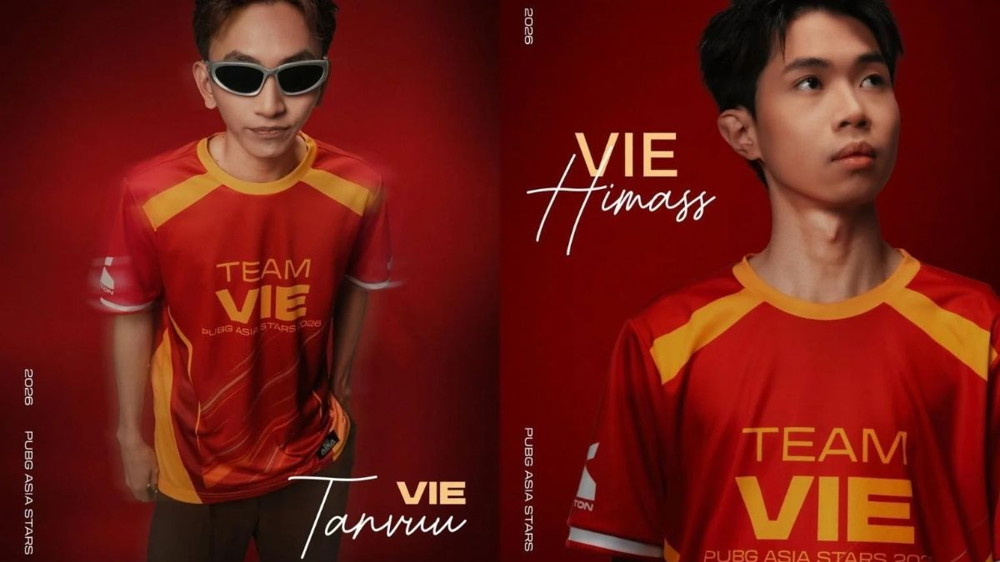

Nguyên nhân: Tại giải đấu giao hữu PUBG Asia Stars 2026, cả hai bị nữ streamer Soopi của Hàn Quốc tố cáo có hành vi xem livestream của đối thủ ("đá stream") trong lúc thi đấu.baomoi
Án phạt: Krafton sau đó đã ra quyết định khóa tài khoản vĩnh viễn và cấm thi đấu chuyên nghiệp vĩnh viễn đối với Himass và TanVuu. Quyết định này vấp phải sự phản đối mạnh mẽ từ cộng đồng game thủ Việt Nam và quốc tế do tranh cãi về tính nhất quán trong quy định thay đổi luật của ban tổ chức.dantri
